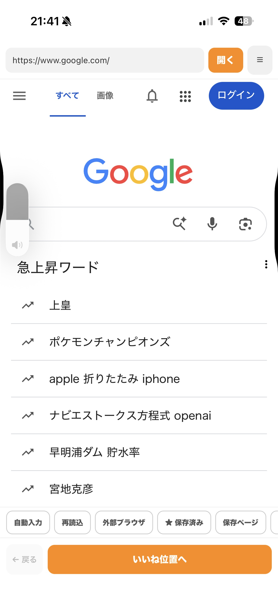

ホーム ／ ページ内検索
iPhone ページ内検索
スクロールで探す前に、
文字から見つける。
設定した文字を含むボタンやリンクへ移動します。候補が複数あっても、順番に確認できます。サイトごとに検索文字・表示名を保存できるので、次に開くときも迷いません。

実際のアプリ画面・検索の入口
※ 検索候補が強調表示されている画面に差し替え予定
HOW IT WORKS
使い方は3ステップ
01
検索文字を登録
サイトごとに、探したいボタンやリンクに含まれる文字を登録します。最初は使い方ページで「お問い合わせ」を検索して練習できます。
02
検索ボタンを押す
一致する候補へ移動します。候補が複数ある場合は、順番に確認できます。
03
自分で操作する
見つけた後のボタン操作は、利用者自身が行います。自動でクリックすることはありません。
よくある疑問
Safari標準のページ内検索と何が違う？
設定を保存できる
Safariの検索はその場限り。LikeAssistはサイトごとに検索文字・表示名・検索ボタンのON/OFFを保存し、次回もそのまま使えます。
ボタン・リンクが対象
ページ全文検索ではなく、設定した文字を含むボタンやリンクを探す機能です。目的の操作にたどり着くまでの手間を減らします。
候補を順に確認
一致する候補が複数ある場合も、順番に移動して確認できます。URL欄にURL以外を入力した場合はGoogle検索として扱います。
参考：Appleのページ内検索ガイド（Safari標準機能の説明）
Related
あわせて見られています
まずは無料で試せます
無料プランでは1日10回までページ内検索を利用できます。Proでは1日100回、サイトプロファイルも20件まで登録できます。
LikeAssistは第三者Webサービスの公式アプリではありません。